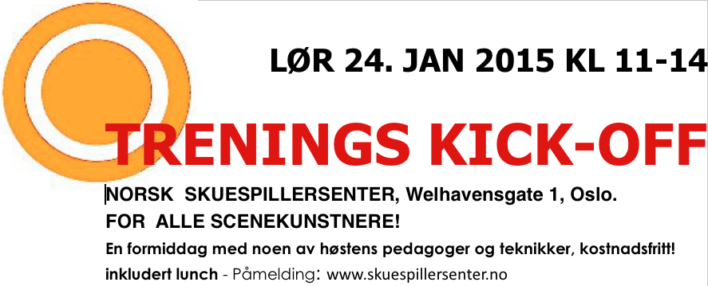
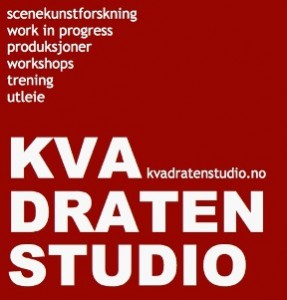

Morgentrenings-kick-off!
- Kategori:
- Tverrfaglige kurs
Tverrfaglige kurs
Åpent for profesjonelle skuespillere og andre profesjonelle deltakere med spesifisert bakgrunn og erfaring. Se søknadsteksten for spesifikasjoner. Legg ved CV. - Dato:
- 24.01.2015 til 24.01.2015
- Start kl :
- 11:00
- Slutt kl :
- 15:00
- Adresse:
- Norsk Skuespillersenter, Welhavensgate 1, Oslo

{kind=link}
Få en gratis smakebit av morgentreningen denne sesongen!
(obs. med forbehold om endringer)
Test ut vårens treningsformer og pedagoger over tre spenstige, morsomme og intensive timer! Midt i programmet blir det en pause der vi serverer mat og drikke.
Velkommen til en lørdag fullspekket med skuespillertrening på høyoktan!
Se vårens program her:
TIMEPLAN VåR 15 final draft
Påmelding
Kickoff'en er åpen for alle profesjonelle scenekunstnere, og studenter er også velkommen! Her er det rom for både ferske og erfarne utøvere, blant både skuespillere, dansere, regissører, koreografer, musikere, pedagoger, performere, med mer.
Meld deg på via vår påmeldingsside.
Vi sees!
{kind=link}
{kind=link}

{kind=link}